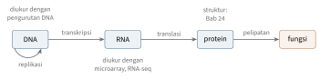
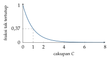

Bab 22
Membaca Kode Kehidupan
Pada musim panas 2025 saya membuka pintu ke ilmu hayati lewat beberapa kuliah sekaligus: pengantar genetika, analisis genom dan transkriptomik, bioinformatika struktural, dan AI dalam ilmu hayati. Kuliah genom dimulai dari dasar sekali, dari apa itu kehidupan dan bagaimana DNA disusun, lalu bergerak ke genetika populasi, teknologi microarray, pengurutan DNA generasi demi generasi, pemetaan bacaan, pemanggilan varian, perakitan genom, dan analisis RNA-seq. Bagi pembaca yang datang dari teknik atau ilmu komputer, seperti saya, bab ini adalah perkenalan dengan bahasa yang dipakai bab-bab berikutnya.
Biologi molekuler modern adalah ilmu data. Satu genom manusia berisi sekitar tiga miliar huruf, satu percobaan pengurutan menghasilkan ratusan juta potongan bacaan, dan satu pengukuran ekspresi gen mencatat aktivitas puluhan ribu gen sekaligus. Hampir setiap langkah dari sampel ke kesimpulan melibatkan algoritme, statistik, dan semakin sering machine learning.
Dogma sentral
Informasi genetik tersimpan dalam DNA, rantai ganda yang tersusun dari empat basa: adenin, sitosin, guanin, dan timin. Basa pada satu untai berpasangan dengan basa pada untai lain, A dengan T dan C dengan G, sehingga setiap untai menyimpan salinan lengkap informasi untai pasangannya. Struktur heliks ganda ini diusulkan Watson dan Crick pada 1953, dengan bantuan penting dari foto difraksi sinar-X yang dibuat Rosalind Franklin, sebuah kisah yang juga disinggung di kuliah. Kedua untai punya arah, dari ujung 5’ ke ujung 3’, dan keduanya berjalan berlawanan arah. DNA sepanjang lebih dari dua meter di setiap sel manusia dilipat berlapis-lapis di sekitar protein histon sampai muat di dalam inti sel yang diameternya beberapa mikrometer.
Dogma sentral biologi molekuler menggambarkan aliran informasi (Gambar 22.1). DNA disalin menjadi RNA dalam proses transkripsi, lalu RNA pembawa pesan diterjemahkan menjadi protein di ribosom. Setiap tiga basa, satu kodon, menyandikan satu asam amino. Ada \(4^3=64\) kodon untuk dua puluh asam amino dan sinyal berhenti, sehingga kodenya berlebih: beberapa kodon berbeda menyandikan asam amino yang sama. Pada sel eukariot, bagian-bagian RNA yang disebut intron dipotong dan bagian ekson disambung ulang sebelum diterjemahkan, dan penyambungan alternatif memungkinkan satu gen menghasilkan beberapa protein berbeda. Protein lalu melipat menjadi bentuk tiga dimensi yang menentukan fungsinya, topik Bab 24.

Bayangkan perpustakaan besar yang buku-bukunya tidak boleh dibawa keluar. Untuk membangun sesuatu, seseorang memfotokopi satu halaman resep (transkripsi), membawa fotokopinya ke dapur (ribosom), lalu memasak sesuai resep itu (translasi). Sel yang berbeda di tubuh kita membawa perpustakaan yang sama, tetapi memfotokopi halaman yang berbeda. Itulah sebabnya sel otot dan sel saraf begitu berbeda meski DNA-nya identik, dan itulah sebabnya mengukur RNA, yaitu fotokopi yang sedang beredar, memberi tahu apa yang sedang dikerjakan sebuah sel.
Variasi dan genetika populasi
Sebelum DNA dikenal, Mendel sudah menemukan aturan pewarisannya dari kacang kapri. Setiap individu membawa dua salinan setiap gen, satu dari masing-masing induk, dan setiap induk mewariskan salah satu salinannya secara acak. Kalau dua induk sama-sama heterozigot, \(Aa\times Aa\), kombinasi anaknya adalah \(AA\), \(Aa\), \(aA\), dan \(aa\) dengan peluang sama, sehingga perbandingan genotipenya \(1:2:1\). Kalau \(A\) dominan, tiga dari empat anak memperlihatkan sifat \(A\), perbandingan \(3:1\) yang terkenal. Itulah kasus khusus hukum Hardy–Weinberg di bawah dengan \(p=q=\tfrac12\).
Dua manusia berbeda di sekitar satu dari setiap seribu basa. Variasi yang paling umum adalah single nucleotide polymorphism (SNP), satu posisi tempat sebagian orang punya satu basa dan sebagian lain punya basa berbeda. Ada juga sisipan dan hapusan pendek, serta variasi struktural yang lebih besar.
Genetika populasi mempelajari bagaimana frekuensi varian berubah dari generasi ke generasi. Hukum Hardy–Weinberg turun dari satu asumsi: dalam populasi besar yang kawin acak tanpa seleksi, setiap individu menerima satu alel dari masing-masing orang tua secara acak dan independen. Kalau frekuensi dua alel adalah \(p\) dan \(q=1-p\), peluang menerima dua alel pertama adalah \(p\cdot p\), dua alel kedua \(q\cdot q\), dan satu dari masing-masing \(2pq\), karena ada dua urutan. Maka frekuensi genotipenya \(p^2\), \(2pq\), dan \(q^2\), dan jumlahnya \((p+q)^2=1\). Dengan \(p=0{,}7\), sekitar 49 persen individu homozigot untuk alel pertama, 42 persen heterozigot, dan 9 persen homozigot untuk alel kedua. Penyimpangan dari proporsi ini menjadi petunjuk adanya seleksi, migrasi, perkawinan sekerabat, atau sekadar kesalahan pengukuran, dan karena itu pengujian Hardy–Weinberg dipakai sebagai kendali mutu data genotipe. Dalam populasi kecil, frekuensi alel juga bergeser secara acak dari generasi ke generasi, sebuah gejala yang disebut genetic drift.
Varian yang letaknya berdekatan di kromosom cenderung diwariskan bersama, karena jarang terpisah oleh rekombinasi. Keadaan ini disebut linkage disequilibrium. Studi asosiasi seluruh genom (GWAS) memanfaatkannya: mereka mengukur ratusan ribu SNP pada ribuan orang dan mencari varian yang frekuensinya berbeda antara penderita dan bukan penderita sebuah penyakit. SNP yang terukur tidak harus penyebabnya. Cukup kalau ia berdekatan dengan penyebabnya dan ikut diwariskan bersama. Karena jumlah uji statistiknya banyak sekali, ambang signifikansinya harus ketat sekali, kalau tidak, ribuan temuan palsu akan muncul hanya karena kebetulan.
Mengukur ekspresi dengan microarray
Microarray DNA adalah kaca kecil yang ditempeli jutaan potongan DNA pendek yang dikenal, yang disebut probe. RNA dari sampel diubah menjadi DNA berlabel fluoresen, lalu dibiarkan menempel pada probe yang cocok. Semakin terang sebuah titik, semakin banyak RNA dari gen itu. Desain klasik Affymetrix memasang setiap probe dua kali: sekali persis cocok, sekali dengan satu basa di tengah sengaja diubah, supaya penempelan yang tidak spesifik bisa diperkirakan. Banyak probe untuk gen yang sama dikumpulkan dalam satu probe set.
Jalan dari gambar ke angka ternyata panjang, dan kuliah membahasnya langkah demi langkah. Pertama, koreksi latar belakang membuang cahaya yang bukan berasal dari penempelan spesifik. Kedua, normalisasi membuat chip yang berbeda bisa dibandingkan. Perbedaannya bisa dilihat dengan plot MvA: untuk dua chip, selisih log-intensitas \(M\) diplot terhadap rata-ratanya \(A\). Kalau tidak ada pergeseran sistematis, titik-titik berkumpul di sekitar garis nol.
Salah satu metode normalisasi yang dibahas adalah normalisasi kuantil, yang memaksa semua chip punya distribusi yang persis sama. Caranya sederhana. Urutkan nilai di setiap chip, ganti setiap peringkat dengan rata-rata nilai pada peringkat itu di semua chip, lalu kembalikan ke urutan asal. Misalkan tiga gen pada dua chip bernilai \((5,2,3)\) dan \((4,1,6)\). Setelah diurutkan, chip pertama menjadi \((2,3,5)\) dan chip kedua \((1,4,6)\). Rata-rata per peringkat adalah \((1{,}5;\ 3{,}5;\ 5{,}5)\). Gen pertama berperingkat tiga di chip pertama dan peringkat dua di chip kedua, sehingga nilai barunya \(5{,}5\) dan \(3{,}5\). Setelah semua dikembalikan, chip pertama menjadi \((5{,}5;\ 1{,}5;\ 3{,}5)\) dan chip kedua \((3{,}5;\ 1{,}5;\ 5{,}5)\). Peringkat di dalam setiap chip tetap, distribusinya kini identik.
Ketiga, ringkasan menggabungkan banyak probe menjadi satu nilai ekspresi per gen. Kuliah membahas RMA, yang memakai rata-rata yang tahan pencilan, dan FARMS, metode berbasis analisis faktor (Bab 6) dari kelompok Sepp Hochreiter. FARMS memperlakukan sinyal bersama antar probe sebagai faktor laten dan noise pribadi setiap probe sebagai noise analisis faktor, dan sekaligus bisa menandai probe set yang tidak membawa sinyal sama sekali.
Kuliah juga menunjukkan bagaimana data ekspresi dipakai dalam skala besar. Pengukuran yang lebih murah, seperti assay L1000 yang hanya mengukur sekitar seribu gen penanda, bisa dipakai untuk merekonstruksi profil transkriptom lengkap dengan model statistik. Basis data seperti Connectivity Map mengumpulkan profil ekspresi sel setelah diberi ribuan senyawa, sehingga senyawa yang “membalik” pola ekspresi sebuah penyakit bisa dicari, sebuah jembatan ke penemuan obat di Bab 23.
Pengurutan DNA
Pengurutan Sanger, generasi pertama, membaca satu potongan DNA sepanjang beberapa ratus basa dengan akurasi tinggi, dan dipakai dalam Proyek Genom Manusia. Generasi kedua, yang dipelopori platform Illumina, membaca ratusan juta potongan pendek secara paralel, sering berpasangan dari kedua ujung sebuah fragmen. Generasi ketiga dan keempat membaca satu molekul DNA secara langsung, dengan bacaan yang jauh lebih panjang, dari puluhan ribu sampai jutaan basa. Pada pengurutan nanopore, DNA ditarik melewati pori kecil, dan setiap kombinasi basa di dalam pori mengubah arus listrik dengan cara yang khas.
Cara kerja pengurutan Illumina memperlihatkan dari mana galat dan skor kualitas berasal. Fragmen DNA ditempelkan pada permukaan kaca, lalu diperbanyak di tempat dengan bridge amplification, sehingga setiap fragmen membentuk gugus berisi ribuan salinan yang identik. Pengurutan berjalan dalam siklus. Di setiap siklus, polimerase menambahkan tepat satu nukleotida berlabel fluoresen ke setiap salinan, kamera memotret warna setiap gugus, lalu labelnya dihapus untuk siklus berikutnya. Panjang bacaan sama dengan jumlah siklus. Seiring siklus berjalan, sebagian salinan dalam satu gugus tertinggal atau mendahului yang lain, sehingga sinyal warnanya semakin bercampur. Karena itulah kualitas basa turun menjelang ujung bacaan, pola yang selalu terlihat pada laporan kendali mutu.
Mengubah sinyal mentah menjadi urutan basa disebut base calling. Metode PHRED klasik untuk pengurutan Sanger memperkirakan letak puncak sinyal, mencocokkannya dengan pemrograman dinamis, dan memberi setiap basa skor kualitas \[Q=-10\log_{10}P_{\mathrm{galat}}.\] Skor 20 berarti peluang salah satu persen, skor 30 satu per seribu, skor 40 satu per sepuluh ribu. Untuk nanopore, base calling dikerjakan jaringan saraf rekuren dan konvolusi seperti CHIRON. Panjang keluaran tidak diketahui sebelumnya, karena sebuah basa bisa bertahan di pori selama beberapa sampel atau hanya satu, sehingga jaringan dilatih dengan loss connectionist temporal classification (CTC), yang menjumlahkan peluang semua cara menyelaraskan keluaran dengan sinyal. Loss yang sama dipakai pengenalan suara.
Bacaan disimpan dalam berkas FASTQ, yang menyimpan setiap bacaan
bersama skor kualitas setiap basanya, dikodekan sebagai karakter ASCII.
Pada pengodean yang umum, karakter dengan kode \(Q+33\) mewakili skor \(Q\), sehingga huruf I (kode
73) berarti skor 40. Alat kendali mutu seperti FastQC memeriksa
distribusi skor di sepanjang bacaan, kandungan GC, dan bacaan duplikat
sebelum analisis dimulai.
Berapa banyak bacaan yang dibutuhkan? Kuliah mendefinisikan cakupan \(C=RM/T\), dengan \(R\) panjang bacaan, \(M\) jumlah bacaan, dan \(T\) panjang genom: rata-rata berapa kali setiap basa terbaca. Untuk genom manusia sepanjang tiga miliar basa, cakupan tiga puluh kali dengan bacaan 150 basa membutuhkan sekitar 600 juta bacaan. Kalau bacaan jatuh secara acak, jumlah bacaan yang menutupi sebuah basa mendekati distribusi Poisson dengan rata-rata \(C\), sehingga peluang sebuah basa tidak tertutup sama sekali adalah \(e^{-C}\) (Gambar 22.2). Dengan cakupan satu kali, sekitar 37 persen genom terlewat. Dengan tiga puluh kali, peluang itu praktis nol, dan setiap basa terbaca cukup sering untuk membedakan varian sungguhan dari galat pengurutan.

Kendali mutu juga memeriksa duplikat. Amplifikasi dengan PCR saat menyiapkan sampel bisa membuat satu fragmen asli tercatat berkali-kali. Duplikat ini bukan pengukuran yang independen: galat pengurutan pada satu salinan ikut tersalin ke semua duplikatnya. Karena itu duplikat biasanya ditandai dan hanya dihitung sekali sebelum varian dipanggil.
Dari bacaan ke genom
Kalau genom acuan sudah ada, setiap bacaan dipetakan ke posisinya di
acuan. Mencocokkan ratusan juta bacaan pendek ke tiga miliar huruf
dengan toleransi terhadap galat membutuhkan indeks yang cerdas. Kuliah
membahas tiga jenis: tabel hash untuk potongan pendek, pohon sufiks, dan
transformasi Burrows–Wheeler (BWT) (Li dan Durbin 2009). BWT dibangun dengan
menulis semua rotasi sebuah teks, mengurutkannya, lalu mengambil kolom
terakhir. Untuk banana$, ketujuh rotasi yang diurutkan
berakhir dengan huruf-huruf a, n,
n, b, $, a,
a, sehingga BWT-nya annb$aa. Huruf-huruf yang
sama cenderung berkumpul, sehingga hasilnya mudah dimampatkan, dan
dengan sedikit informasi tambahan, transformasi ini bisa dibalik dan
dipakai untuk mencari pola dalam waktu yang hanya bergantung pada
panjang pola, bukan panjang genom.
Strategi pemetaan umumnya adalah seed and extend: cari potongan pendek yang cocok persis, lalu perluas dengan penjajaran yang toleran terhadap galat. Penjajaran itu diselesaikan dengan pemrograman dinamis, gagasan Bellman yang sama dengan di Bab 5. Skor terbaik untuk menjajarkan \(i\) huruf pertama bacaan dengan \(j\) huruf pertama acuan adalah \[S(i,j)=\max\big\{S(i-1,j-1)+s(a_i,b_j),\ S(i-1,j)-g,\ S(i,j-1)-g\big\},\] dengan \(s\) skor cocok atau tidak cocok dan \(g\) penalti celah. Ketiga pilihan berarti: pasangkan kedua huruf, sisipkan celah di acuan, atau sisipkan celah di bacaan. Algoritme Smith–Waterman menambahkan pilihan nol agar penjajaran lokal bisa dimulai di mana saja. Untuk bacaan panjang, potongan-potongan yang cocok dirangkai dulu menjadi rantai yang konsisten sebelum penjajaran rinci, supaya pemrograman dinamis yang mahal hanya dijalankan di daerah yang menjanjikan.
Setelah bacaan dipetakan, variant calling memutuskan di posisi mana sampel berbeda dari acuan. Tantangannya membedakan varian sungguhan dari galat pengurutan dan galat pemetaan. Kuliah membandingkan beberapa alat, dari yang berbasis model statistik seperti GATK dan FreeBayes sampai yang berbasis deep learning. DeepVariant (Poplin dkk. 2018) mengubah tumpukan bacaan di sekitar sebuah posisi menjadi gambar dan memakai jaringan konvolusi untuk mengklasifikasikan genotipenya, sebuah contoh menarik dari visi komputer yang dipinjam oleh genomik.
Logika dasar pemanggilan varian adalah teorema Bayes dengan likelihood binomial. Misalkan di sebuah posisi ada 30 bacaan, dan 15 di antaranya membawa basa alternatif. Kalau individu itu heterozigot, setiap bacaan membawa basa alternatif dengan peluang separuh, dan peluang mendapat tepat 15 dari 30 adalah \(\binom{30}{15}0{,}5^{30}\approx0{,}14\). Kalau ia homozigot untuk basa acuan, basa alternatif hanya bisa muncul karena galat pengurutan, katakanlah dengan peluang satu persen per bacaan, dan peluang mendapat 15 galat dari 30 adalah \(\binom{30}{15}0{,}01^{15}0{,}99^{15}\approx10^{-22}\). Rasio keduanya begitu besar sehingga prior apa pun yang masuk akal tidak akan membalik kesimpulannya. Kasus sulit muncul ketika cakupannya rendah, misalnya 2 dari 4 bacaan, atau ketika galat pemetaan dan duplikat membuat bacaan-bacaan itu tidak independen. Di situlah model yang lebih teliti, termasuk jaringan saraf seperti DeepVariant, memberi perbedaan. Frekuensi alel varian, \(15/30=0{,}5\) dalam contoh ini, juga dipakai untuk mendeteksi mutasi yang hanya ada di sebagian sel, misalnya pada tumor, di mana frekuensinya bisa jauh di bawah separuh.
Kalau tidak ada acuan, genom harus dirakit dari nol, seperti menyusun
teka-teki jigsaw raksasa dari potongan-potongan yang saling tumpang
tindih. Pendekatan overlap–layout–consensus membangun graf yang
simpulnya bacaan dan sisinya tumpang tindih, lalu mencari jalur yang
melewati setiap simpul tepat sekali, sebuah jalur Hamilton yang sulit
dicari secara umum. Pendekatan graf de Bruijn membalik sudut pandangnya
(Gambar 22.3). Bacaan dipotong menjadi semua kata sepanjang \(k\), yang disebut \(k\)-mer. Setiap \(k\)-mer menjadi sisi yang menghubungkan
awalan dan akhirannya sepanjang \(k-1\). Untuk urutan ATGGCGT
dengan \(k=3\), kata-katanya
ATG, TGG, GGC, GCG,
dan CGT, dan rakitan menjadi jalur yang melewati setiap
sisi tepat sekali, sebuah jalur Euler yang bisa dicari dengan efisien.
Perbedaan antara jalur Hamilton dan jalur Euler inilah yang membuat graf
de Bruijn praktis untuk jutaan bacaan pendek.
ATGGCGT dengan \(k=3\). Simpul adalah kata sepanjang dua,
sisi adalah kata sepanjang tiga. Jalur yang melewati setiap sisi sekali
mengeja kembali urutannya.Bagian yang berulang di genom adalah musuh utama kedua pendekatan, karena potongan dari dua tempat berbeda tampak identik dan graf menjadi bercabang atau runtuh menjadi satu. Galat pengurutan menambah cabang-cabang palsu yang harus dipangkas. Bacaan panjang membantu justru karena mereka bisa melompati pengulangan. Kuliah menutup bagian ini dengan proyek-proyek tonggak, dari Proyek Genom Manusia dan proyek 1000 genom sampai genom Neanderthal, dan menunjukkan bahwa jaringan graf (Bab 13) mulai dipakai untuk menyederhanakan graf rakitan.
RNA-seq
Pengurutan juga bisa mengukur ekspresi gen. RNA diubah menjadi DNA, diurutkan, lalu jumlah bacaan yang jatuh pada setiap gen dihitung. Hitungan ini harus dinormalisasi, karena sampel yang berbeda diurutkan dengan kedalaman berbeda dan gen yang panjang menghasilkan lebih banyak bacaan. Ukuran seperti TPM membagi hitungan dengan panjang gen dan dengan total, supaya ekspresi antar gen dan antar sampel bisa dibandingkan.
Untuk mencari gen yang ekspresinya berubah antara dua kondisi, DESeq2 (Love, Huber, dan Anders 2014) memodelkan hitungan dengan distribusi binomial negatif. Mengapa bukan Poisson? Pada distribusi Poisson, variansnya sama dengan rata-ratanya. Data biologis selalu lebih berisik dari itu, karena selain noise penghitungan, ada variasi biologis sungguhan antar individu. Binomial negatif menambahkan suku dispersi, \(\mathrm{Var}=\mu+\alpha\mu^2\). Untuk gen dengan rata-rata 1000 bacaan dan dispersi \(\alpha=0{,}04\), simpangan bakunya \(\sqrt{1000+40\,000}\approx202\), jauh lebih besar dari \(\sqrt{1000}\approx32\) yang diramalkan Poisson. Mengabaikan dispersi ini membuat hampir setiap gen tampak berubah secara signifikan.
Karena setiap gen hanya punya sedikit ulangan, perkiraan dispersi untuk satu gen tidak pasti. DESeq2 meminjam kekuatan dari ribuan gen lain: dispersi setiap gen ditarik ke arah tren bersama yang bergantung pada rata-rata ekspresi, dan perkiraan perubahan lipat yang berisik untuk gen berekspresi rendah juga ditarik ke arah nol. Inilah prior Bayesian empiris, prior yang dipelajari dari data itu sendiri, logika yang sama dengan regularisasi di Bab 1. Dengan puluhan ribu gen yang diuji sekaligus, nilai p dikoreksi untuk mengendalikan proporsi temuan palsu.
Di mana machine learning masuk
Genomik adalah salah satu medan tempat machine learning paling banyak dipakai di ilmu hayati. Jaringan saraf memanggil basa dari sinyal nanopore, memanggil varian dari tumpukan bacaan, dan memprediksi dari urutan DNA saja di mana protein akan menempel atau seberapa kuat sebuah gen diekspresikan. Model bahasa yang dilatih pada urutan DNA dan protein meniru resep model bahasa manusia di Bab 9. Metode tanpa label seperti biclustering dan analisis faktor (Bab 6) menemukan modul gen yang bekerja bersama dalam data ekspresi.
Karakter datanya menuntut kehati-hatian khusus. Jumlah fitur bisa puluhan ribu dengan jumlah sampel puluhan, sehingga overfitting mengintai di setiap sudut. Batch percobaan, yaitu hari pengukuran, mesin, atau laboratorium, meninggalkan jejak sistematis yang bisa dipelajari model sebagai pengganti biologi yang sebenarnya. Dan sampel dari pasien atau keluarga yang sama berkorelasi. Semua ini adalah sumber kebocoran yang dibahas di Bab 1, dalam bentuk yang khas biologi.
Perkembangan riset
Genomik memasuki era model fondasi. Enformer (Avsec dkk. 2021) memprediksi ekspresi gen langsung dari urutan DNA dengan arsitektur yang menggabungkan konvolusi dan attention, sehingga bisa memadukan informasi dari elemen pengatur yang letaknya sampai sekitar 100 ribu basa dari gen. Dengan model seperti ini, efek sebuah varian pada ekspresi gen bisa ditebak tanpa percobaan. DNABERT-2 (Zhou dkk. 2023) memperlihatkan bahwa pilihan token penting juga untuk DNA: mengganti \(k\)-mer dengan byte-pair encoding, algoritme yang sama dengan tokenisasi model bahasa di Bab 38, membuat model lebih efisien. Evo (Nguyen dkk. 2024) adalah model berkonteks panjang yang dilatih pada jutaan genom prokariota dan fag, dan melaporkan hukum penskalaan untuk DNA. Ia mampu memprediksi fungsi tanpa contoh berlabel dan membangkitkan sistem CRISPR-Cas yang berfungsi.
AlphaMissense (Cheng dkk. 2023) menyetel AlphaFold pada data frekuensi varian di populasi manusia dan primata untuk menilai apakah sebuah varian missense, yaitu perubahan satu asam amino, kemungkinan berbahaya. Basis data prediksinya mencakup semua substitusi asam amino tunggal yang mungkin pada protein manusia, dan mengklasifikasikan 89 persen varian missense sebagai kemungkinan jinak atau kemungkinan patogen. Untuk data sel tunggal, scGPT (Cui dkk. 2024) melatih transformer generatif pada profil ekspresi jutaan sel sebagai model fondasi yang bisa disetel untuk tugas seperti anotasi jenis sel dan prediksi efek gangguan genetik. Di semua contoh ini, peringatan dari bab ini tetap berlaku: evaluasi yang jujur menuntut pembagian data yang mencegah kebocoran antar kerabat urutan.
Catatan sumber.
Bab ini mengikuti kuliah Genome Analysis and Transcriptomics (dasar biologi molekuler, genetika populasi, microarray dan pemrosesannya, pengurutan DNA dan base calling, pemetaan bacaan, pemanggilan varian, perakitan genom, RNA-seq) dan Introduction to Genetics. Untuk analisis urutan secara probabilistik, Durbin dkk. (1998) tetap menjadi rujukan klasik.